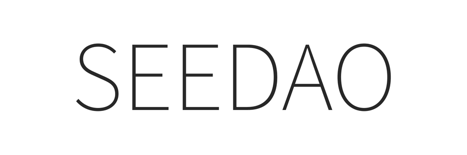

我最近在上海开始探索一些俱乐部，其中有家令人印象深刻，Cedar对外称是非典型的「混合厨房」，老板在执着于卖阿拉伯卷饼的同时，也常邀请国外DJ空降到此处放歌或者做音乐电台，之前也有举办艺术哲学类的读书会，最近又在策划举办车库市集和户外派对等活动。
基于个人兴趣和品牌赋能，在交谈合作意愿之后，我决定尽快发起P1提案，想通过反向链接公共空间来扩大DAO的声量和酝酿新的可能性，但更重要的还是想要增加社区不同等级成员的权益。
(提案详情:https://forum.seedao.xyz/thread/p1-irl-51770）
a. 免费共享 CDJ 练习室 ，请任意 DIY 。
b. 非酒精类饮品: SNS 享受 9 折 / SEED 享受 7 折
（不参与CDJ自由练习的小伙伴也可以顺路捎一杯便宜咖啡带走 / SEED 能享受低于店内会员的折扣）。
以上福利将会持续三周（2024.4.8-2024.4.29），在此期间，可联系项目负责人（WeChat: S0117INes）。
如需协助onboarding（以获取SNS），可添加新手营小助手: seedao2023。
SEED gallery:https://seed.seedao.xyz/
内容｜伊内斯
排版｜伊内斯
审核｜Bo